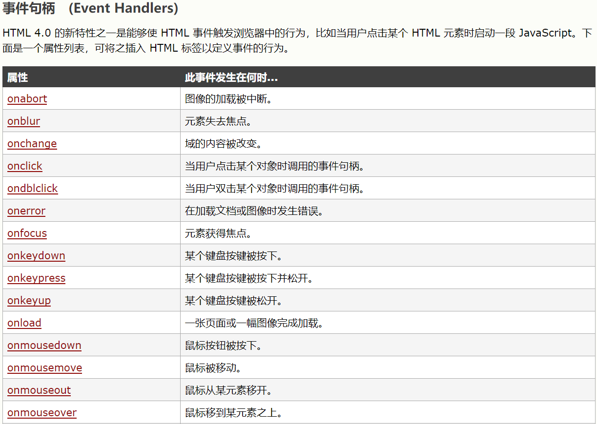
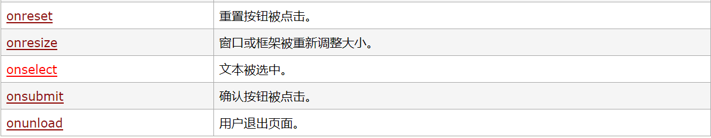
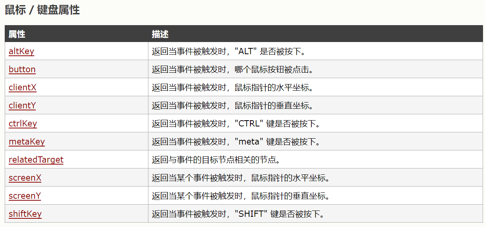
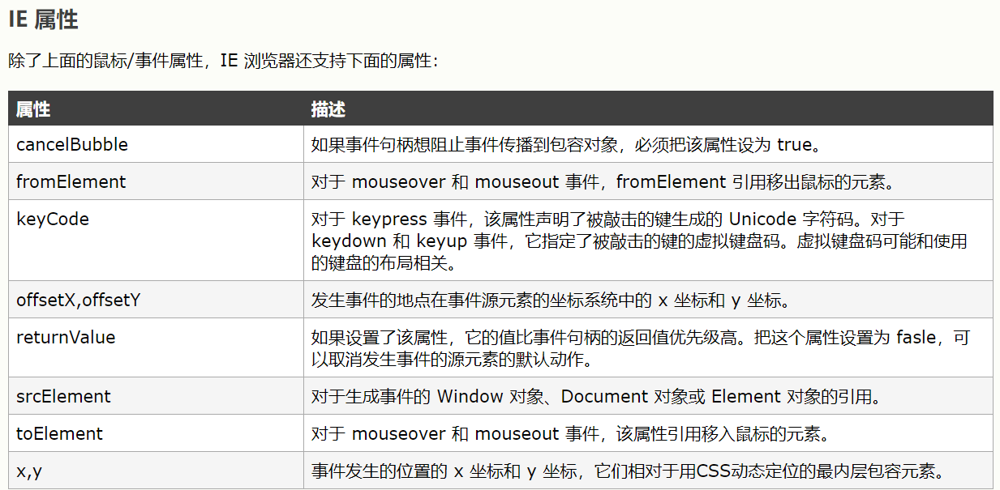
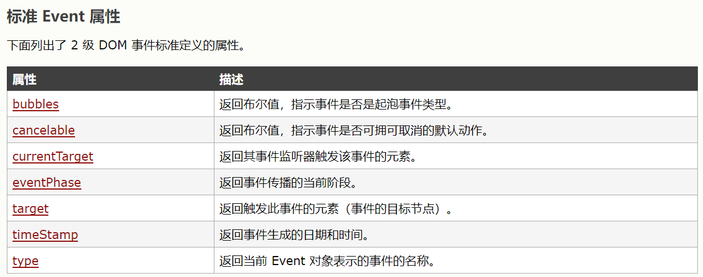
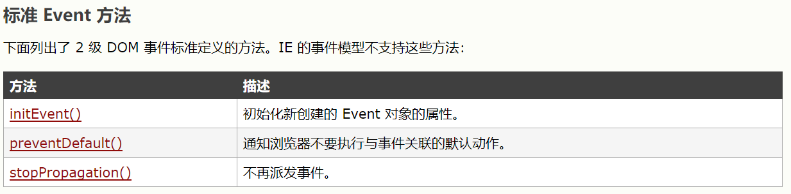

点击按钮，获得基于时间的问候
点击按钮来显示今天是周几
点击按钮for循环汽车的类型：
点击按钮，for/in循环遍历对象"person"的属性
点击按钮，while循环汽车类型
点击按钮，do/while循环汽车类型
点击按钮，汽车类型,标签引用，break和continue语句的应用
请输入一个5到10之间的数字：
JavaScript 可用来在数据被送往服务器前对 HTML 表单中的这些输入数据进行验证。 被 JavaScript 验证的这些典型的表单数据有：
这是一个文本
HTML事件的例子：
hello world
onload事件：提示框会提示浏览器是否启用cookie（navigator.cookieEnabled==true）
onchange事件常结合对输入字段的验证来使用，当用户改变输入字段的内容时，会调用 upperCase() 函数
请输入英文字符：
当离开输入字段时，会触发将文本转换为大写的函数。
onmouseover 和 onmouseout 事件可用于在用户的鼠标移至 HTML 元素上方或移出元素时触发函数。
onmousedown, onmouseup 以及 onclick 构成了鼠标点击事件的所有部分。首先当点击鼠标按钮时，会触发 onmousedown 事件，当释放鼠标按钮时，会触发 onmouseup 事件，最后，当完成鼠标点击时，会触发 onclick 事件。
按住鼠标按住图片能更换图片
请输入英文字符：
当输入字段获得焦点时，会触发改变背景颜色的函数。
     在文档中点击鼠标，会有提示框提出你点击了哪个鼠标按键
首先创建该元素（元素节点），然后向一个已存在的元素追加该元素
这是一个段落
这是另一个段落
如需删除 HTML 元素，您必须首先获得该元素的父元素：
这是一个段落
这是另一个段落